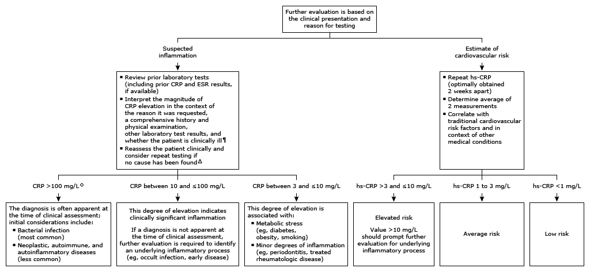

Initial evaluation of high C-reactive protein (CRP or hs-CRP) in adults*

This algorithm is intended for use with additional UpToDate content on acute phase reactants and cardiovascular risk assessment.
CRP: C-reactive protein; hs-CRP: high-sensitivity C-reactive protein; ESR: erythrocyte sedimentation rate. * CRP levels vary with age, sex, and race. In an hs-CRP assay, the normal reference range is generally ≤3 mg/L (≤0.3 mg/dL). In a traditional CRP assay, reference ranges for CRP vary greatly from one laboratory to another, to a degree that cannot be explained on a biologic or technical basis. Interpretation of a specific abnormal result should be based upon the reference range reported with that result. ¶ There is no universally agreed upon CRP level that is especially concerning. The likelihood of a bacterial infection is greater with a higher CRP level. Δ Repeat testing is primarily useful to follow the course of illness. However, it may be helpful to repeat CRP testing if no cause has been found, the timing of which depends on the acuity of illness. ◊ Patients with this degree of elevation are usually acutely ill and require timely evaluation and management.